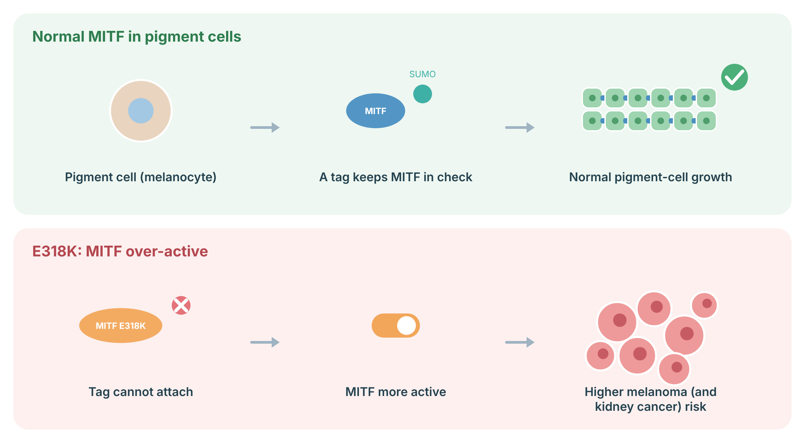
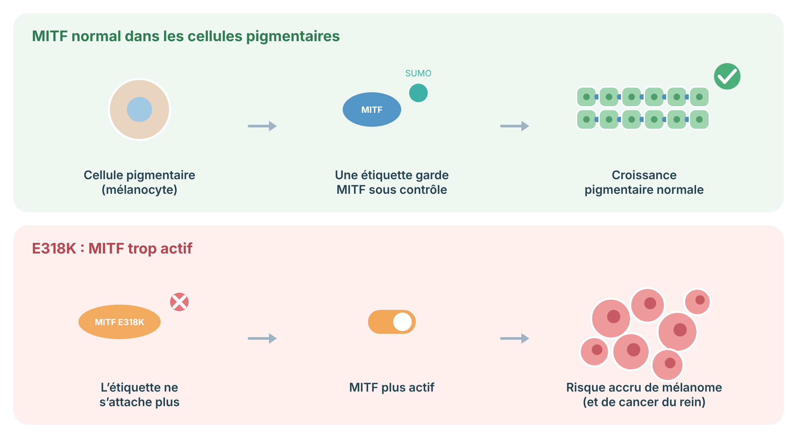

A practical prevention and surveillance plan for carriers of the moderate-risk MITF p.E318K germline variant, written for both patients and clinicians.
MITF is a gene that helps control pigment-making cells in the skin. A specific change in this gene, called E318K, modestly raises the chance of developing melanoma, the most serious type of skin cancer. It has also been linked, less certainly, to kidney cancer. Carrying this variant does not mean you will get cancer. It means your background risk is higher than average, so regular skin checks and sensible sun protection matter more for you.
Many carriers also have a higher number of moles, including unusual (atypical) moles. This is part of the same biology and is a reason to have a skin specialist who knows your baseline.
MITF (microphthalmia-associated transcription factor) is a master regulator of melanocyte development, survival, and pigment production. The recurrent germline missense variant p.E318K (c.952G>A) disrupts a conserved SUMOylation consensus site, producing a gain-of-function effect that enhances transcription of MITF target genes and promotes clonogenicity and invasion in melanoma and renal cell lines.
The variant behaves as a moderate-penetrance, autosomal dominant susceptibility allele. Meta-analysis across pooled hereditary and sporadic cohorts gives an odds ratio for cutaneous melanoma of roughly 2.4 (95% CI 1.9 to 3.0), with individual study estimates between about 2.2 and 4.8 depending on ascertainment. The variant is associated with high nevus count, atypical (dysplastic) nevi, and possibly faster-growing or nodular melanomas. Penetrance is incomplete and strongly modified by phenotype (skin type, nevus count), UV exposure, and co-inherited risk alleles such as MC1R red-hair-colour variants.
E318K is not equivalent to a high-penetrance gene such as CDKN2A. Surveillance here is calibrated to moderate risk and rests substantially on expert consensus rather than dedicated outcome trials. The associations with kidney and pancreatic cancer are real in some cohorts but inconsistent across studies, and at least one ancestry-matched whole-exome analysis found minimal independent non-melanoma risk. Communicate this uncertainty honestly.
MITF is the main control switch of pigment cells (melanocytes). Its activity is normally kept in check, partly by a small chemical tag called SUMO. The E318K variant stops this tag from attaching, so MITF is somewhat more active. This modestly raises the risk of melanoma, and probably of kidney cancer.
MITF: Unlike most cancer genes, the E318K variant makes MITF more active rather than switching it off.

Sources: Bertolotto C, et al. Nature 2011;480:94–8 (PubMed); Yokoyama S, et al. Nature 2011;480:99–103 (PubMed).
The table below shows which cancers are linked to this variant and how strong the evidence is. Melanoma is the main and best-established risk. The others are less certain and are managed mostly based on your personal and family history.
| Cancer | Risk level | Strength of evidence | Notes |
|---|---|---|---|
| Cutaneous melanoma | Moderate | Established (meta-analysis) | OR ~2.4 overall; higher with multiple primaries, high nevus count, or co-inherited MC1R variants. |
| Renal cell carcinoma | Possible / modest | Inconsistent | OR ~4.5 in some enriched cohorts; not confirmed in ancestry-matched exome analyses. Personal and family history guide screening. |
| Pancreatic cancer | Uncertain | Weak / anecdotal | Reported in some families; no consistent population signal. No routine screening on the basis of E318K alone. |
| Other (breast, GI, others) | Not established | Insufficient | Scattered case-series reports; likely reflect shared polygenic or environmental risk. Manage by family history, not the variant. |
Lifetime risk figures specific to E318K carriers are not reliably quantified. Odds ratios are presented because absolute lifetime risk estimates from cohort data are not robust for this variant.
This is the most important part of your plan. The goal is to find any melanoma early, when it is highly curable. You will have regular full-skin exams by a dermatologist, check your own skin monthly, and protect your skin from the sun. If you have many moles, your dermatologist may take baseline photographs so changes are easier to spot over time.
Dedicated surveillance recommendations for MITF E318K do not exist in the way they do for high-penetrance genes. The intervals above are adapted from familial-melanoma and CDKN2A frameworks, scaled to the variant's moderate penetrance. Recent genome-first data show melanoma incidence in E318K carriers rising through the thirties, which supports initiating surveillance around age 30, or earlier if phenotype or family history warrants. Any suspicious or changing lesion should be biopsied promptly; carrier melanomas may diverge from typical dermoscopic patterns.
Establish care with a dermatologist who maintains a baseline record (photography where available). Treat the patient's own monthly self-exam as a core part of surveillance, not an optional extra. The combination of an informed patient and a consistent dermatology baseline catches most early melanomas.
Some studies have linked this variant to kidney cancer, but the evidence is mixed. There is no firm rule that every carrier needs kidney scans. Whether to screen depends on your family history and your own risk factors. If you and your care team decide to screen, it is usually a periodic ultrasound or MRI of the kidneys. We will discuss the pros and cons with you.
The RCC association rests on enriched case-control cohorts (OR around 4.5 in some) and was not reproduced in ancestry-matched whole-exome analysis, where non-melanoma risk was minimal. There is no guideline-mandated renal surveillance protocol for E318K. MRI is preferred over CT when imaging is pursued, to avoid cumulative radiation in a lifelong-surveillance population. Decisions should be individualized and documented as shared decision-making.
A small number of families with this variant have had pancreatic cancer, but the link is not well proven. We do not screen everyone with the variant. If pancreatic cancer runs in your family, that family history, rather than the variant alone, may justify a discussion about pancreatic screening at a specialized centre.
Unlike CDKN2A, where pancreatic risk is established and CAPS/NCCN-aligned surveillance (EUS and/or MRI/MRCP from age 40, or 10 years before the earliest family diagnosis) is recommended, E318K carries no established pancreatic surveillance indication. Apply standard familial-pancreatic-cancer criteria independently of the variant.
Your genes set part of your risk, but sun exposure is the part you can control. Reducing UV damage is one of the most effective things you can do. Avoid sunburns, avoid tanning beds entirely, use broad-spectrum sunscreen, wear protective clothing and a hat, and seek shade during peak hours. These habits matter more for you than for the average person.
UV reduction has the strongest modifiable effect on melanoma risk and is the highest-yield intervention available to carriers. Genetic knowledge can itself improve adherence to sun-protective behaviour, which is part of the rationale for testing and counselling.
This variant can be passed to children, with a 1 in 2 chance for each child. Close relatives (parents, siblings, children) may also carry it. Genetic counselling helps your family decide who to test and what it means. Testing is usually offered to adult relatives, since melanoma surveillance starts in adulthood.
Testing of minors is generally deferred, since interventions (surveillance, sun protection education) begin in adolescence to adulthood and do not require a genetic result in childhood. Counsel that E318K is moderate-risk and that a negative cascade result returns a relative to population-level skin-cancer advice, not zero risk.
If you have already had melanoma, your treatment follows the same effective, modern pathways as for anyone with melanoma. Carrying this variant does not, by itself, change which treatments work for you. It does mean lifelong skin surveillance, because carriers can develop more than one melanoma over time.
Management of an established melanoma in an E318K carrier follows standard stage-based oncology, including surgery, sentinel node assessment where indicated, and immunotherapy or targeted therapy for advanced disease. There is no validated germline-directed alteration of systemic therapy on the basis of E318K. The practical implications of carrier status are a higher rate of multiple primary melanomas, reinforcing lifelong dermatologic surveillance, and consideration of cascade testing for relatives.
The items below are areas of active study. They are not validated for clinical surveillance decisions and should be framed as trial-only or research-context.
Dermatologist full-skin exam every 6 to 12 months from diagnosis or age 25 to 30. Include scalp, mucosa, genitals, nails.
Monthly ABCDE self-examination. Report any new or changing lesion promptly.
Total-body photography and dermoscopy for atypical or numerous nevi.
SPF 30+, no tanning beds, protective clothing, avoid sunburns. Highest-yield modifiable step.
Ultrasound or MRI every 1 to 2 years only with personal or family RCC history; shared decision otherwise.
Only if independent familial-pancreatic-cancer criteria are met. Not on E318K alone.
Consider multi-gene melanoma panel in strong family history; E318K does not exclude a second variant.
Offer to first-degree relatives; defer testing of minors.
Moderate, incomplete penetrance. Surveillance is largely consensus-based, not trial-proven.
Established melanoma managed by standard stage-based oncology; no germline-directed change.
Un plan pratique de prévention et de surveillance pour les porteurs du variant germinal MITF p.E318K à risque modéré, rédigé à l'intention des patients et des cliniciens.
MITF est un gène qui aide à contrôler les cellules productrices de pigment dans la peau. Un changement précis de ce gène, appelé E318K, augmente modérément la probabilité de développer un mélanome, le type de cancer de la peau le plus grave. Il a aussi été associé, de façon moins certaine, au cancer du rein. Être porteur de ce variant ne signifie pas que vous aurez un cancer. Cela signifie que votre risque de base est plus élevé que la moyenne, donc les examens réguliers de la peau et une protection solaire raisonnable comptent davantage pour vous.
Beaucoup de porteurs ont aussi un plus grand nombre de grains de beauté, dont certains atypiques. Cela fait partie de la même biologie et justifie d'avoir un dermatologue qui connaît votre état de référence.
MITF (facteur de transcription associé à la microphtalmie) est un régulateur maître du développement, de la survie et de la production de pigment des mélanocytes. Le variant germinal faux-sens récurrent p.E318K (c.952G>A) perturbe un site consensus de SUMOylation conservé, produisant un effet de gain de fonction qui accroît la transcription des gènes cibles de MITF et favorise la clonogénicité et l'invasion dans les lignées de mélanome et de carcinome rénal.
Le variant se comporte comme un allèle de susceptibilité autosomique dominant à pénétrance modérée. Les méta-analyses regroupant des cohortes héréditaires et sporadiques donnent un rapport de cotes pour le mélanome cutané d'environ 2,4 (IC 95 % 1,9 à 3,0), les estimations individuelles allant d'environ 2,2 à 4,8 selon le recrutement. Le variant est associé à un nombre élevé de naevus, à des naevus atypiques (dysplasiques) et possiblement à des mélanomes à croissance plus rapide ou nodulaires. La pénétrance est incomplète et fortement modulée par le phénotype (type de peau, nombre de naevus), l'exposition aux UV et les allèles de risque co-hérités tels que les variants MC1R des cheveux roux.
E318K n'est pas équivalent à un gène à forte pénétrance comme CDKN2A. La surveillance ici est calibrée à un risque modéré et repose largement sur un consensus d'experts plutôt que sur des essais cliniques dédiés. Les associations avec le cancer du rein et du pancréas sont réelles dans certaines cohortes mais incohérentes entre les études, et au moins une analyse d'exome appariée selon l'ascendance n'a trouvé qu'un risque non mélanique indépendant minime. Il faut communiquer cette incertitude honnêtement.
MITF est l’interrupteur principal des cellules pigmentaires (mélanocytes). Son activité est normalement contrôlée, en partie par une petite étiquette chimique appelée SUMO. Le variant E318K empêche cette étiquette de s’attacher, ce qui rend MITF un peu plus actif. Cela augmente modérément le risque de mélanome, et probablement de cancer du rein.
MITF: Contrairement à la plupart des gènes de cancer, le variant E318K rend MITF plus actif au lieu de l’éteindre.

Sources : Bertolotto C, et al. Nature 2011;480:94–8 (PubMed); Yokoyama S, et al. Nature 2011;480:99–103 (PubMed).
Le tableau ci-dessous montre quels cancers sont liés à ce variant et la solidité des preuves. Le mélanome est le risque principal et le mieux établi. Les autres sont moins certains et se gèrent surtout selon vos antécédents personnels et familiaux.
| Cancer | Niveau de risque | Solidité des preuves | Notes |
|---|---|---|---|
| Mélanome cutané | Modéré | Établi (méta-analyse) | RC ~2,4 globalement; plus élevé avec mélanomes multiples, nombre élevé de naevus ou variants MC1R co-hérités. |
| Carcinome rénal | Possible / modeste | Incohérent | RC ~4,5 dans certaines cohortes enrichies; non confirmé dans les analyses d'exome appariées. Les antécédents guident le dépistage. |
| Cancer du pancréas | Incertain | Faible / anecdotique | Rapporté dans certaines familles; aucun signal populationnel cohérent. Pas de dépistage de routine sur la seule base d'E318K. |
| Autres (sein, GI, autres) | Non établi | Insuffisant | Rapports épars de séries de cas; reflètent probablement un risque polygénique ou environnemental partagé. À gérer selon les antécédents familiaux, pas le variant. |
Les chiffres de risque à vie propres aux porteurs d'E318K ne sont pas quantifiés de façon fiable. Les rapports de cotes sont présentés parce que les estimations de risque absolu à vie issues des cohortes ne sont pas robustes pour ce variant.
C'est la partie la plus importante de votre plan. L'objectif est de détecter tout mélanome tôt, quand il est très facilement guérissable. Vous aurez des examens complets de la peau par un dermatologue, vous examinerez vous-même votre peau chaque mois et vous protégerez votre peau du soleil. Si vous avez beaucoup de grains de beauté, votre dermatologue pourra prendre des photos de référence afin de repérer plus facilement les changements au fil du temps.
Il n'existe pas de recommandations de surveillance dédiées pour MITF E318K comme il en existe pour les gènes à forte pénétrance. Les intervalles ci-dessus sont adaptés des cadres du mélanome familial et de CDKN2A, ajustés à la pénétrance modérée du variant. Des données récentes « génome d'abord » montrent que l'incidence du mélanome chez les porteurs d'E318K augmente durant la trentaine, ce qui appuie le début de la surveillance vers 30 ans, ou plus tôt si le phénotype ou les antécédents familiaux le justifient. Toute lésion suspecte ou changeante doit être biopsiée rapidement; les mélanomes des porteurs peuvent diverger des profils dermoscopiques typiques.
Établir un suivi avec un dermatologue qui tient un dossier de référence (photographie si possible). Considérer l'auto-examen mensuel du patient comme un élément central de la surveillance, et non comme un extra optionnel. La combinaison d'un patient informé et d'un état de référence dermatologique constant détecte la plupart des mélanomes précoces.
Certaines études ont lié ce variant au cancer du rein, mais les preuves sont mitigées. Il n'existe pas de règle ferme voulant que chaque porteur ait besoin d'examens rénaux. La décision de dépister dépend de vos antécédents familiaux et de vos propres facteurs de risque. Si vous et votre équipe décidez de dépister, il s'agit habituellement d'une échographie ou d'une IRM périodique des reins. Nous discuterons des avantages et des inconvénients avec vous.
L'association avec le carcinome rénal repose sur des cohortes cas-témoins enrichies (RC autour de 4,5 dans certaines) et n'a pas été reproduite dans l'analyse d'exome appariée selon l'ascendance, où le risque non mélanique était minime. Il n'existe pas de protocole de surveillance rénale mandaté par les lignes directrices pour E318K. L'IRM est préférée à la TDM lorsqu'une imagerie est entreprise, afin d'éviter une dose cumulative de rayonnement dans une population en surveillance à vie. Les décisions doivent être individualisées et documentées comme une décision partagée.
Un petit nombre de familles porteuses de ce variant ont eu un cancer du pancréas, mais le lien n'est pas bien prouvé. Nous ne dépistons pas tout le monde porteur du variant. Si le cancer du pancréas est présent dans votre famille, ce sont ces antécédents familiaux, plutôt que le variant seul, qui peuvent justifier une discussion sur le dépistage pancréatique dans un centre spécialisé.
Contrairement à CDKN2A, où le risque pancréatique est établi et où une surveillance alignée sur CAPS/NCCN (échoendoscopie et/ou IRM/CPRM dès 40 ans, ou 10 ans avant le diagnostic familial le plus précoce) est recommandée, E318K ne comporte aucune indication établie de surveillance pancréatique. Appliquer les critères standards du cancer du pancréas familial indépendamment du variant.
Vos gènes déterminent une partie de votre risque, mais l'exposition au soleil est la partie que vous pouvez contrôler. Réduire les dommages causés par les UV est l'une des choses les plus efficaces que vous puissiez faire. Évitez les coups de soleil, évitez complètement les lits de bronzage, utilisez un écran solaire à large spectre, portez des vêtements protecteurs et un chapeau, et cherchez l'ombre aux heures de pointe. Ces habitudes comptent davantage pour vous que pour la personne moyenne.
La réduction des UV a le plus fort effet modifiable sur le risque de mélanome et constitue l'intervention au meilleur rendement offerte aux porteurs. La connaissance génétique peut elle-même améliorer l'adhésion aux comportements de protection solaire, ce qui fait partie de la justification du test et du conseil.
Ce variant peut être transmis aux enfants, avec une probabilité de 1 sur 2 pour chaque enfant. Les proches (parents, frères et sœurs, enfants) peuvent aussi en être porteurs. Le conseil génétique aide votre famille à décider qui tester et ce que cela signifie. Le test est habituellement offert aux proches adultes, puisque la surveillance du mélanome débute à l'âge adulte.
Le test des mineurs est généralement reporté, puisque les interventions (surveillance, éducation à la protection solaire) débutent de l'adolescence à l'âge adulte et ne nécessitent pas de résultat génétique dans l'enfance. Préciser qu'E318K est à risque modéré et qu'un résultat de cascade négatif ramène un proche aux conseils de cancer de la peau de niveau populationnel, et non à un risque nul.
Si vous avez déjà eu un mélanome, votre traitement suit les mêmes parcours modernes et efficaces que pour toute personne atteinte de mélanome. Être porteur de ce variant ne change pas, en soi, les traitements qui fonctionnent pour vous. Cela signifie toutefois une surveillance cutanée à vie, car les porteurs peuvent développer plus d'un mélanome au fil du temps.
La prise en charge d'un mélanome établi chez un porteur d'E318K suit l'oncologie standard fondée sur le stade, incluant la chirurgie, l'évaluation du ganglion sentinelle lorsque indiquée, et l'immunothérapie ou la thérapie ciblée pour la maladie avancée. Il n'existe aucune modification validée de la thérapie systémique dirigée par la lignée germinale sur la base d'E318K. Les implications pratiques du statut de porteur sont un taux plus élevé de mélanomes primaires multiples, ce qui renforce la surveillance dermatologique à vie, et la considération du dépistage en cascade pour les proches.
Les éléments ci-dessous sont des domaines d'étude active. Ils ne sont pas validés pour les décisions de surveillance clinique et doivent être présentés comme réservés aux essais ou au contexte de recherche.
Examen complet de la peau par un dermatologue tous les 6 à 12 mois dès le diagnostic ou 25 à 30 ans. Inclure cuir chevelu, muqueuses, organes génitaux, ongles.
Auto-examen ABCDE mensuel. Signaler rapidement toute lésion nouvelle ou changeante.
Photographie corporelle et dermoscopie pour naevus atypiques ou nombreux.
FPS 30+, aucun lit de bronzage, vêtements protecteurs, éviter les coups de soleil. Étape modifiable au meilleur rendement.
Échographie ou IRM tous les 1 à 2 ans seulement avec antécédents personnels ou familiaux de carcinome rénal; décision partagée sinon.
Seulement si des critères indépendants de cancer du pancréas familial sont remplis. Pas sur E318K seul.
Envisager un panel multigénique de mélanome en cas d'antécédents familiaux marqués; E318K n'exclut pas un second variant.
Offrir aux proches du premier degré; reporter le test des mineurs.
Pénétrance modérée et incomplète. La surveillance est largement fondée sur le consensus, non prouvée par essais.
Mélanome établi pris en charge par l'oncologie standard selon le stade; aucun changement dirigé par la lignée germinale.